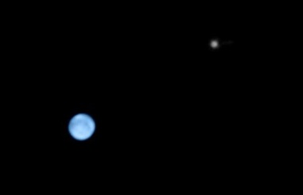
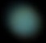
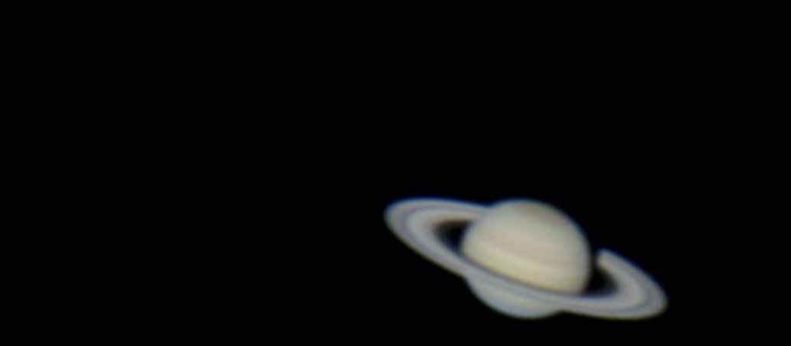
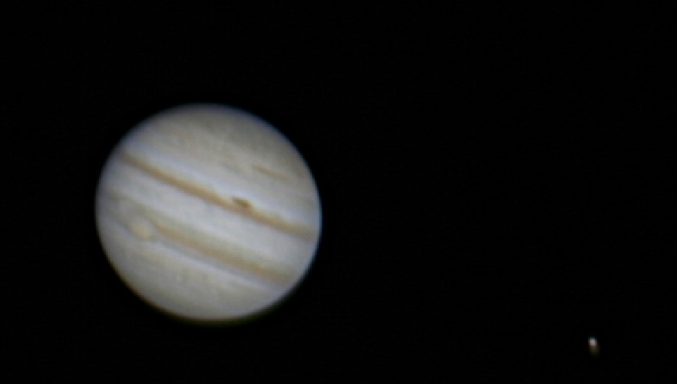
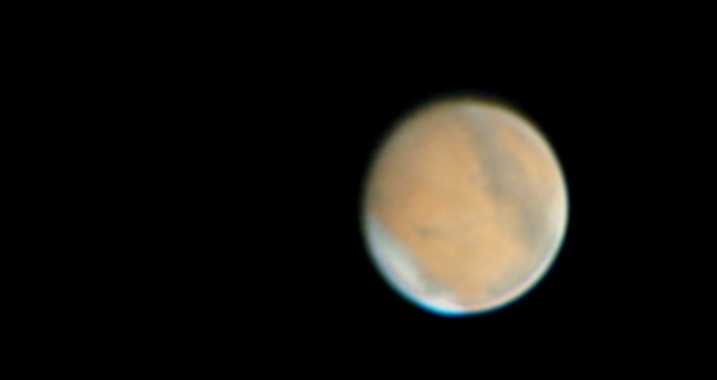
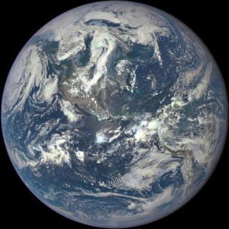
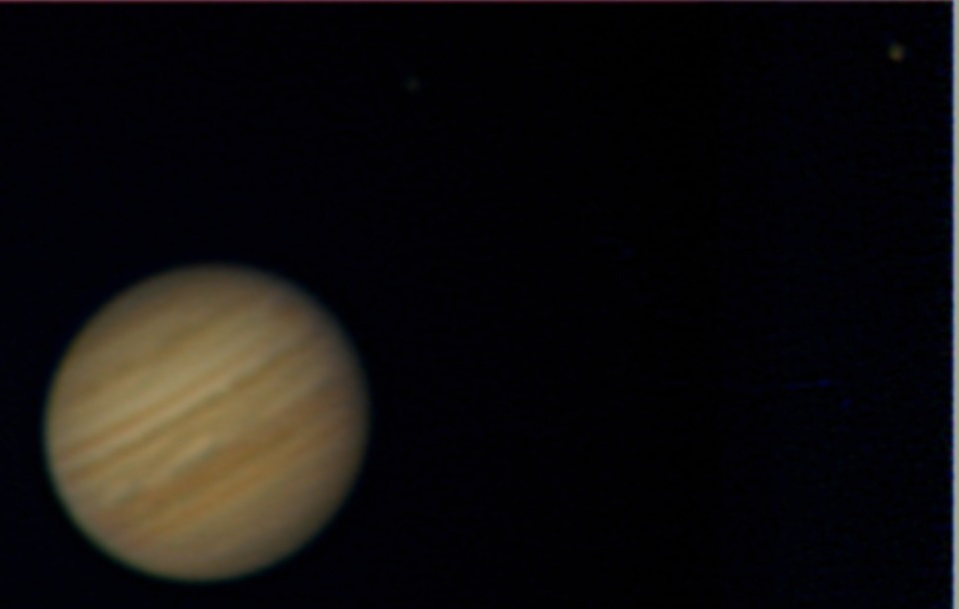
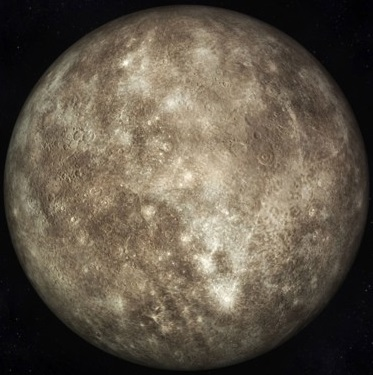
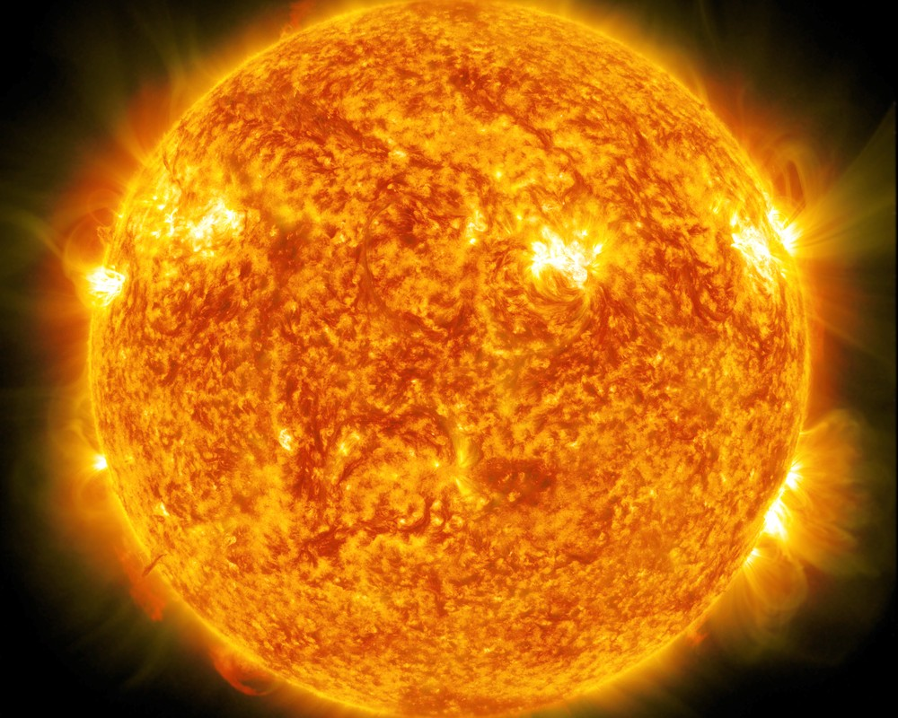

Neptune
Neptune est la huitième et dernière planète du Système solaire par distance croissante au Soleil.
Neptune orbite autour du Soleil à une distance d'environ 30 UA, avec une excentricité orbitale moitié moindre
que celle de la Terre, en bouclant une révolution complète en 164,79 ans. C'est la troisième planète du Système
solaire par masse décroissante — elle est 17 fois plus massive que la Terre et 19 fois moins massive que Jupiter
— et la quatrième par taille décroissante : Neptune est en effet à la fois un peu plus massive mais un peu plus
petite qu'Uranus.

Uranus
Uranus est la septième planète du Système solaire par sa distance au Soleil, la troisième par la taille et la
quatrième par la masse. Elle doit son nom à la divinité romaine du ciel Uranus, père de Saturne et grand-père de
Jupiter, noms que portent les deux planètes la précédant dans le Système solaire.
Uranus est la première planète découverte à l’époque moderne. Bien qu'elle soit visible à l’œil nu comme les cinq
planètes déjà connues, son caractère planétaire ne fut pas identifié en raison de son très faible éclat (à la
limite de la visibilité) et de son déplacement apparent très lent. William Herschel annonce sa découverte le 26
avril 1781, élargissant les frontières connues du Système solaire pour la première fois à l’époque moderne. Uranus
est la première planète découverte à l’aide d’un télescope.

Saturne
Saturne est la sixième planète du Système solaire par ordre de distance au Soleil et la deuxième après Jupiter
tant par sa taille que par sa masse.
Saturne est une planète géante, au même titre que Jupiter, Uranus et Neptune, et plus précisément une géante gazeuse
4,5 de type Jupiter froid comme Jupitera. D'un diamètre d'environ neuf fois et demi celui de la Terre, elle est
majoritairement composée d'hydrogène et d'hélium. Sa masse vaut 95 fois celle de la Terre et son volume 900 fois
celui de notre planète. Sa période de révolution est d'environ 29 ans. Elle était au périhélie le 26 juillet 2003
et à l'aphélie le 17 avril 2018.

Jupiter
Jupiter est une planète géante gazeuse. Il s'agit de la plus grosse planète du Système solaire, plus volumineuse
et massive que toutes les autres planètes réunies, et la cinquième planète par sa distance au Soleil (après Mercure,
Vénus, la Terre et Mars).
Jupiter est ainsi officiellement désignée, en français comme en anglais, d'après le dieu romain Jupiter, assimilé
au dieu grec Zeus.
Le symbole astronomique de la planète était « ♃ », qui serait une représentation stylisée du foudre de Jupiter, ou
bien serait dérivé d'un hiéroglyphe ou, comme cela ressortirait de certains papyrus d'Oxyrhynque, de la lettre
grecque zêta, initiale du grec ancien Ζεύς (Zeús). L'Union astronomique internationale recommande de substituer au
symbole astronomique « ♃ » l'abréviation « J », correspondant à la lettre capitale J de l'alphabet latin, initiale
de l'anglais Jupiter5.

Mars
Mars (prononcé en français : /maʁs/) est la quatrième planète par ordre de distance croissante au Soleil et la
deuxième par masse et par taille croissantes. Son éloignement au Soleil est compris entre 1,381 et 1,666 UA (206,6
à 249,2 millions de kilomètres), avec une période orbitale de 669,58 jours martiens (686,71 jours terrestres).
C’est une planète tellurique, comme le sont Mercure, Vénus et la Terre, environ dix fois moins massive que la Terre
mais dix fois plus massive que la Lune. Sa topographie présente des analogies aussi bien avec la Lune, à travers
ses cratères et ses bassins d'impact, qu'avec la Terre, avec des formations d'origine tectonique et climatique
telles que des volcans, des rifts, des vallées, des mesas, des champs de dunes et des calottes polaires. La plus
grande montagne du Système solaire, Olympus Mons (qui est aussi un volcan bouclier), et le plus grand canyon,
Valles Marineris, se trouvent sur Mars.

Terre
La Terre s'est formée il y a 4,54 milliards d'années environ et la vie y est apparue moins d'un milliard d'années
plus tard1. La planète abrite des millions d'espèces vivantes, dont les humains2. La biosphère de la Terre a
fortement modifié l'atmosphère et les autres caractéristiques abiotiques de la planète, permettant la prolifération
d'organismes aérobies de même que la formation d'une couche d'ozone qui, associée au champ magnétique terrestre,
bloque une partie du rayonnement solaire, permettant ainsi la vie sur Terre3. Les propriétés physiques de la Terre,
de même que son histoire géologique et son orbite, ont permis à la vie de subsister durant cette période. De plus,
la Terre devrait pouvoir maintenir la vie (telle que nous la connaissons actuellement) durant encore au moins 500
millions d'années4,5.
La croûte terrestre est divisée en plusieurs segments rigides appelés plaques tectoniques qui se déplacent sur des
millions d'années. Environ 71 % de la surface terrestre est couverte par des océans d'eau salée qui forment
l'hydrosphère avec les autres sources d'eau comme les lacs, les fleuves ou les nappes phréatiques.

Vénus
La distance de Vénus au Soleil est comprise entre 0,718 et 0,728 UA, avec une période orbitale de 224,7 jours.
Vénus est une planète tellurique, comme le sont également Mercure, la Terre et Mars. Elle possède un champ
magnétique très faible et n'a aucun satellite naturel. Elle et Uranus sont les deux seules planètes du Système solaire
dont la rotation est rétrograde. De plus, elle est la seule ayant une période de rotation (243 jours) supérieure à sa
période de révolution. Vénus présente en outre la particularité d'être quasiment sphérique — son aplatissement peut
être considéré comme nul — et de parcourir l'orbite la plus circulaire des planètes du Système solaire, avec une
excentricité orbitale de 0,0068 (contre 0,0167 pour la Terre).
Vénus est presque aussi grande que la Terre — son diamètre représente 95 % de celui de notre planète — et a une masse
équivalente aux quatre cinquièmes de celle de la Terre. Sa surface est dissimulée sous d'épaisses couches de nuages
très réfléchissants qui lui confèrent un albédo de Bond de 0,75 et une magnitude apparente dans le ciel pouvant atteindre
-4,6, valeur dépassée uniquement par la Lune et le Soleil.

Mercure
Mercure est la planète la plus proche du Soleil et la moins massive du Système solaire1. Son éloignement au Soleil est
compris entre 0,31 et 0,47 unité astronomique (46 et 70 millions de kilomètres), ce qui correspond à une excentricité
orbitale de 0,2 — plus de douze fois supérieure à celle de la Terre, et de loin la plus élevée pour une planète du système
solaire. Elle est visible à l'œil nu depuis la Terre avec un diamètre apparent de 4,5 à 13 secondes d'arc, et une magnitude
apparente de 5,7 à −2,3 ; son observation est toutefois rendue difficile par son élongation toujours inférieure à 28,3° qui
la noie le plus souvent dans l'éclat du Soleil.
Mercure a la particularité d'être en résonance 3:2 sur son orbite, sa période de révolution (~88 jours) valant exactement
1,5 fois sa période de rotation (~59 jours), et donc la moitié d'un jour solaire (~176 jours).

Soleil
Le Soleil est l’étoile du Système solaire. Dans la classification astronomique, c’est une étoile de type naine jaune
d'une masse d'environ 1,9891 × 1030 kg, composée d’hydrogène (75 % de la masse ou 92 % du volume) et d’hélium (25 % de
la masse ou 8 % du volume)9. Le Soleil fait partie de la galaxie appelée la Voie lactée et se situe à environ 8 kpc (∼26 100
a.l.) du centre galactique, dans le bras d'Orion. Le Soleil orbite autour du centre galactique en 225 à 250 millions d'années
(année galactique). Autour de lui gravitent la Terre (à la vitesse de 30 km/s), sept autres planètes, au moins cinq planètes
naines, de très nombreux astéroïdes et comètes et une bande de poussière. Le Soleil représente à lui seul environ 99,854 % de
la masse du Système solaire ainsi constitué, Jupiter représentant plus des deux tiers du reste.
